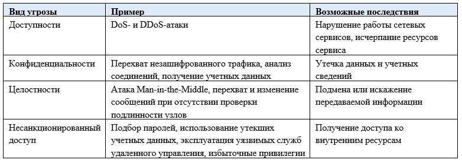
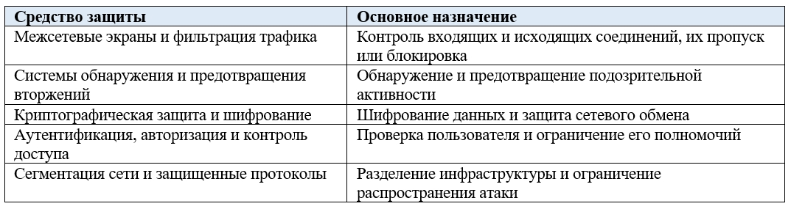
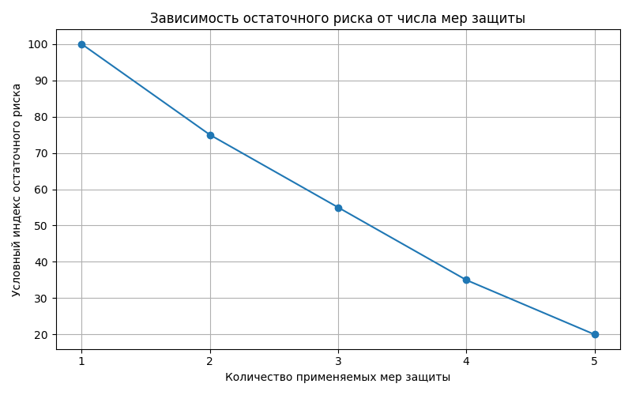
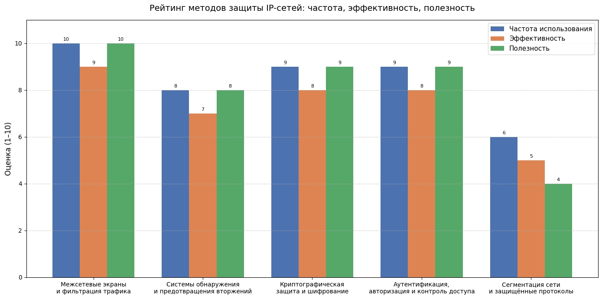

Глушенок Анна Александровна
Федеральное государственное автономное
образовательное учреждение высшего образования
Российский университет дружбы народов имени Патриса Лумумбы
Актуальность:
- IP-сети - основа современной цифровой инфраструктуры.
- Рост зависимости организаций от сетевых сервисов.
- Увеличение числа подключенных устройств.
Проблема:
Противоречие между необходимостью обеспечивать надежное функционирование
IP-сетей и наличием многочисленных угроз.
Объект исследования: процессы передачи, обработки и защиты информации в IP-сетях.
Предмет исследования: угрозы информационной безопасности IP-сетей, а также технические и организационные методы их предупреждения, обнаружения и нейтрализации.
Научная новизна: систематизация угроз IP-сетям и обобщение подхода к выбору мер защиты.
Практическая значимость: возможность использования рекомендаций при работе с IP-сетями.
Цель: изучить угрозы ИБ в IP-сетях, проанализировать средства защиты и разработать комплекс мер, снижающих риск нарушения безопасности.
Гипотеза: уровень защищенности IP-сети может быть повышен, если применять не отдельное средство защиты, а согласованный комплекс мер.
Задачи:
- выявить и классифицировать распространенные угрозы информационной
безопасности;
- проанализировать причины возникновения сетевых уязвимостей,
последствия атак;
- обосновать выбор мер защиты для различных уровней сетевой
инфраструктуры;
- сформировать комплексный подход к защите IP-сети и определить критерии
оценки эффективности.
Методы и материалы: анализ и обобщение научно-технической литературы, сравнительный анализ средств защиты, классификация угроз, системный подход и моделирование типовой корпоративной IP-сети.
Теоретическая база исследования:
- IP-сеть — совокупность устройств и каналов связи, в которой
передача пакетов осуществляется с использованием протокола Internet
Protocol.
- Информационная безопасность — состояние защищенности
информации и поддерживающей ее инфраструктуры от угроз, способных
привести к ущербу.
- Угроза информационной безопасности — потенциальная причина
нежелательного события, способного нанести ущерб безопасности сети.

Основной недостаток: анализирует только по формальным признакам (адреса, порты, протокол), но не видит, что происходит внутри разрешённого соединения, из-за чего может пропустить вредоносную активность внутри него. Зависим от возможных ошибок в политике.
Основной недостаток: распознают только шаблоны уже известных атак, могут не распознавать ранее неизвестное воздействие, давать ложные срабатывания и требуют постоянной актуализации сигнатур (шаблонов).
Основной недостаток: защищает данные только при корректной настройке и надежном хранении ключей. Ошибки в конфигурации, устаревшие версии протоколов, слабые алгоритмы или компрометация закрытых ключей сводят защиту на нет.
Основной недостаток: надежность зависит от дисциплины пользователей и администрирования: слабые или украденные пароли, избыточные привилегии и ошибки в разграничении доступа позволяют обойти защиту.
Основной недостаток: не защищает узлы внутри сегмента и зависит от корректности межсегментной фильтрации: ошибка в правилах или обходные пути между сегментами могут свести защиту на нет.

Комплексный подход - защита внешней границы и внутренней инфраструктуры.
1 уровень — защита периметра:
- Межсетевые экраны и фильтрация трафика.
- Сегментация сети.
- Системы обнаружения и предотвращения вторжений.
2 уровень — защита внутренней сети:
- Сегментация сети и защищённые протоколы.
- Межсетевые экраны и фильтрация трафика.
3 уровень — защита узлов и каналов связи:
- Криптографическая защита и шифрование.
- Аутентификация, авторизация и контроль доступа.
4 уровень — мониторинг и реагирование:
- Системы обнаружения и предотвращения вторжений.


Вывод: Информационная безопасность IP-сетей — непрерывный процесс, состоящий из нескольких уровней и обеспечиваемый множеством методов в совокупности.
Scarfone, K. Guidelines on Firewalls and Firewall Policy / K. Scarfone, P. Hoffman. — Gaithersburg : National Institute of Standards and Technology, 2009. — (NIST Special Publication ; 800-41 Rev. 1). — Текст : электронный. — URL: https://csrc.nist.gov/pubs/sp/800/41/r1/final (дата обращения: 16.11.2026).
Scarfone, K. Guide to Intrusion Detection and Prevention Systems (IDPS) / K. Scarfone, P. Mell. — Gaithersburg : National Institute of Standards and Technology, 2007. — (NIST Special Publication ; 800-94). — Текст : электронный. — URL: https://csrc.nist.gov/pubs/sp/800/94/final (дата обращения: 16.11.2026).
Rescorla, E. The Transport Layer Security (TLS) Protocol Version 1.3 / E. Rescorla. — Internet Engineering Task Force, 2018. — (RFC 8446). — Текст : электронный. — URL: https://www.rfc-editor.org/rfc/rfc8446.html (дата обращения: 16.11.2026).
Kent, S. Security Architecture for the Internet Protocol / S. Kent, K. Seo. — Internet Engineering Task Force, 2005. — (RFC 4301). — Текст : электронный. — URL: https://www.rfc-editor.org/rfc/rfc4301.html (дата обращения: 16.11.2026).
CISA, FBI, NSA и партнерские организации. Enhanced Visibility and Hardening Guidance for Communications Infrastructure. — 2024. — Текст : электронный. — URL: https://www.ic3.gov/CSA/2024/241203.pdf (дата обращения: 16.11.2026).
CISA. Technical Approaches to Uncovering and Remediating Malicious Activity. — Joint Cybersecurity Advisory AA20-245A, 2020. — Текст : электронный. — URL: https://www.cisa.gov/uscert/ncas/alerts/aa20-245a (дата обращения: 16.11.2026).